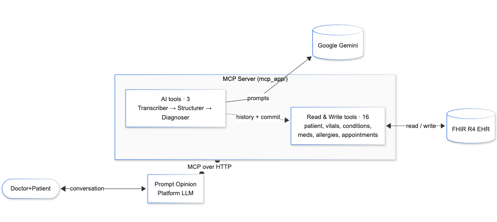

Turning doctor–patient conversations into structured FHIR — automatically.
1 AMA, Five physician specialties that spend the most time in the EHR (2024), based on Epic data from 200,000+ physicians. 2 Medscape Physician Burnout & Depression Report (2024–25); see also Tebra 2025 Physician Burnout Survey.
Conversational UI where the doctor pastes a transcript or uploads audio. Thin, focused, human-in-the-loop. Works against any MCP-compliant clinical backend — not locked in.
19 governed tools — 9 FHIR read, 7 FHIR write, 3 AI agents (transcribe → structure → diagnose). Pluggable into Prompt Opinion, Claude Desktop, or any MCP client.
SHARP-on-MCP: the platform injects FHIR server URL + access token per request, so the same code runs against any FHIR R4 EHR.

Doctor–Patient consultation audio recordings from a public Kaggle dataset. — simulated clinical conversations, complete with small talk, interruptions, and accents, fed straight into the transcriber agent.
Live reads & writes against the
public HAPI FHIR R4 test server —
hapi.fhir.org/baseR4. Every GetPatient, SuggestDiagnosis,
and CommitEncounter call is a real HTTP round-trip
to a hosted R4-compliant EHR.